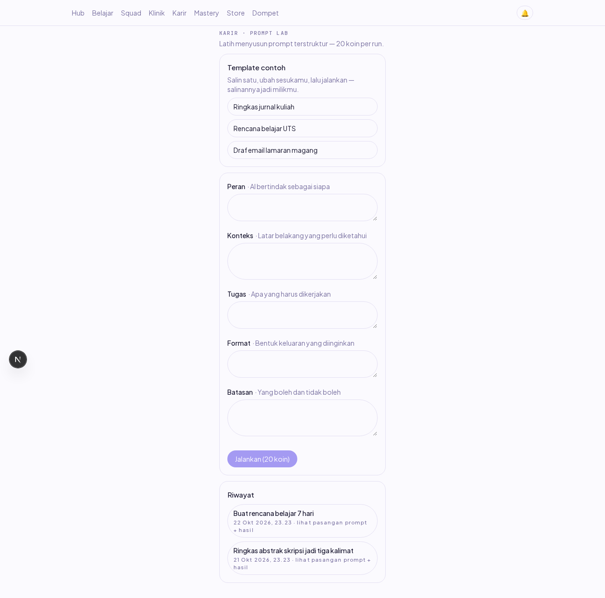
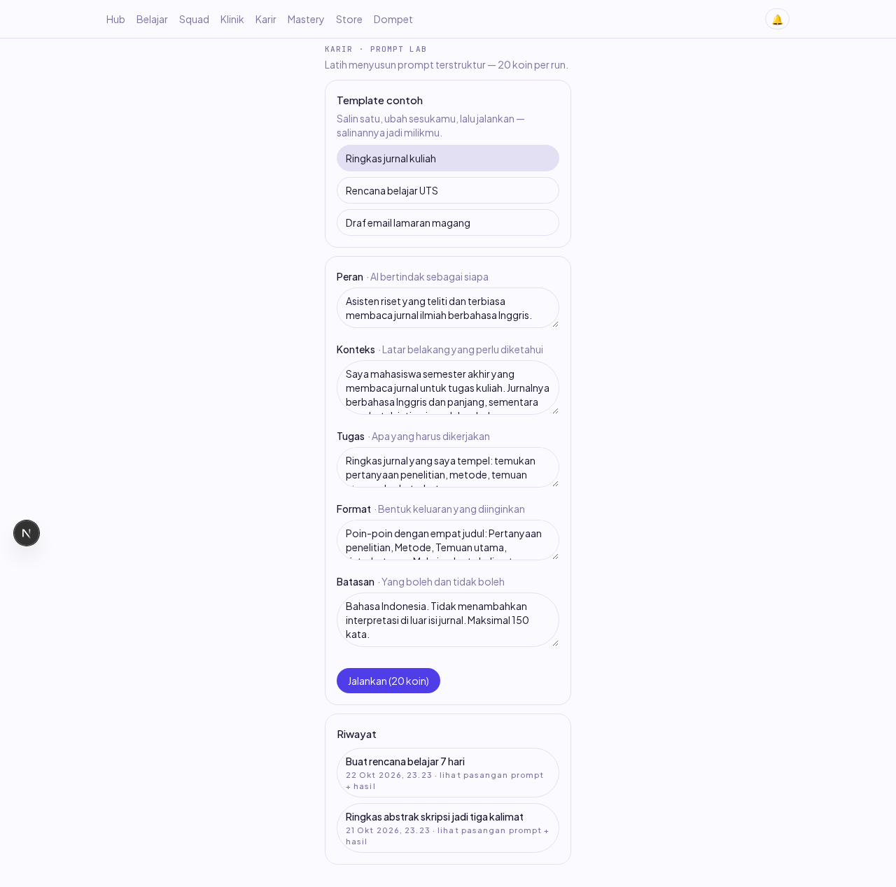
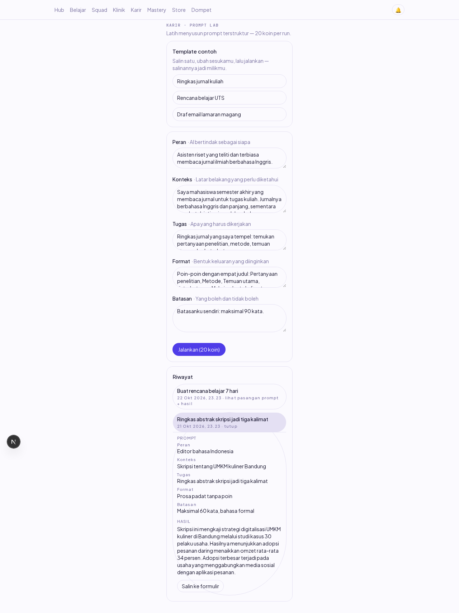
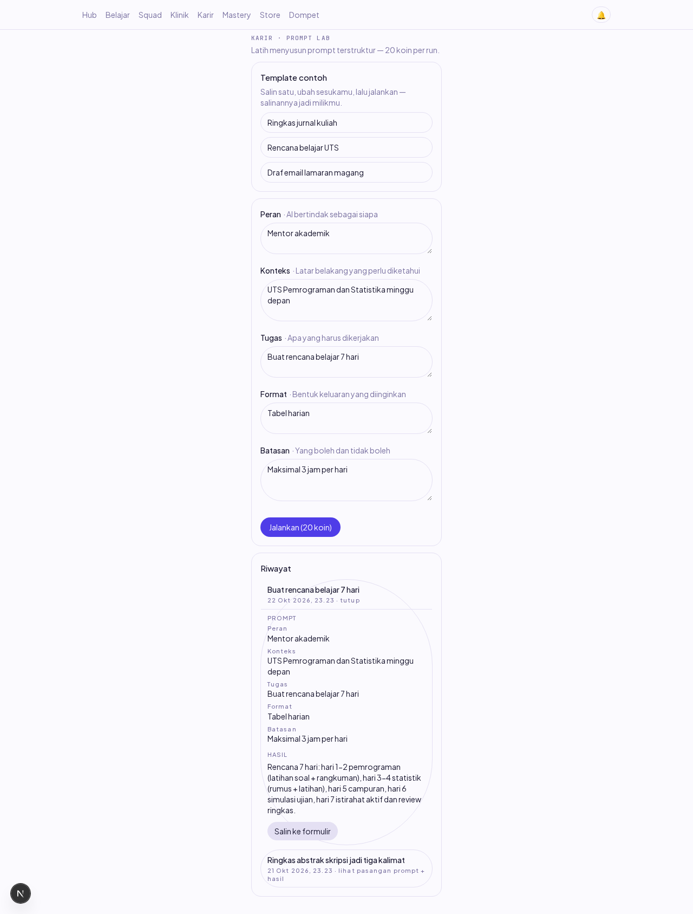
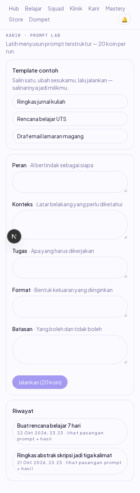

Laporan verifikasi item PL-02 (Dev B, W7). Tambahan di atas layar Prompt Lab PL-01: seksi template contoh yang bisa disalin lalu diubah (PL-5), dan riwayat run yang menampilkan prompt dan hasilnya berpasangan (PL-6). Dikerjakan 23 Okt 2026.
Sebelum: layar /career punya form 5 bagian dan riwayat berupa cuplikan satu baris — pengguna baru harus mengarang prompt dari nol, dan hasil lampau tidak bisa dilihat utuh. Sesudah: (1) tiga template siap-jalankan tinggal satu klik, salinannya masuk form dan menjadi milik pengguna untuk diubah; (2) tiap run di riwayat bisa dibuka menjadi pasangan prompt (5 bagian berlabel) + hasil PENUH, dan isinya bisa disalin kembali ke form.
Keputusan desain: template adalah konstanta statis sisi web — PRD §10.3 tidak punya rute/template tabel, dan "menjadi milik pengguna" berarti salinannya masuk form lalu tersimpan sebagai run miliknya di prompt_runs. Tiap bagian template sengaja lolos validasi server (1–2000 karakter) supaya salinan bisa langsung dijalankan tanpa disunting dulu.
Run LLM sungguhan tidak bisa dibuat dari browser lokal (kunci LLM kosong — jalur sukses dengan LLM nyata sudah tercatat di docs/reports/PL-01/ lewat 10 test integrasi). Karena itu dua baris riwayat untuk pengujian PL-6 disemai langsung ke prompt_runs lewat psql — preseden sah di repo ini (komentar career-read.service sendiri memakai baris yang disemai). Struktur dan output-nya berbentuk persis respons rute riwayat, jadi yang diuji browser adalah render dari data nyata bentuk produksi, bukan stub.
| # | Skenario | Harapan | Hasil | Cara verifikasi |
|---|---|---|---|---|
| 1 | PL-5: tampil tepat 3 template | 3 tombol bernama: Ringkas jurnal kuliah, Rencana belajar UTS, Draf email lamaran magang | LULUS (jumlah=3) | Playwright + Screenshot 01 |
| 2 | PL-5: salin template → form terisi | kelima bagian (Peran/Konteks/Tugas/Format/Batasan) terisi isi template | LULUS | Playwright + Screenshot 02 |
| 3 | PL-5: salinan bisa diubah | edit Batasan tidak menimpa bagian lain (Peran tetap) | LULUS | Playwright (isi + baca ulang) |
| 4 | PL-5: tiap bagian template lolos validasi server | panjang tiap bagian 1–2000 kar. (salinan bisa langsung dijalankan) | LULUS | unit test TEMPLATE_CONTOH |
| 5 | PL-6: riwayat menampilkan run | 2 run tampil sebagai item | LULUS (jumlah=2) | Playwright |
| 6 | PL-6: buka pasangan prompt+hasil | 5 bagian berlabel Peran,Konteks,Tugas,Format,Batasan | LULUS (label persis) | Playwright + Screenshot 03 |
| 7 | PL-6: hasil PENUH, bukan cuplikan | output utuh tampil (panjang 275 kar. > batas cuplikan 60) | LULUS | Playwright |
| 8 | PL-6: aksesibilitas toggle | aria-expanded=true terbuka, false tertutup | LULUS | Playwright (getAttribute) |
| 9 | PL-6: klik lagi menutup | panel hilang (detached) | LULUS | Playwright |
| 10 | PL-6: klik run lain → pindah fokus | panel lama tertutup, tidak pernah dua terbuka | LULUS | Playwright |
| 11 | Salin run lampau ke form | kelima bagian terisi dari riwayat (jalankan-ulang PL-01 tetap jalan) | LULUS | Playwright + Screenshot 04 |
| 12 | 375px mobile | tanpa scroll horizontal (scrollWidth=375) | LULUS | Playwright + Screenshot 05 |
| 13 | Console & network | nol error console, nol request 4xx/5xx | LULUS (nol) | listener Playwright |
| Varian | Cakupan | Status |
|---|---|---|
| Template (3 varian) | tiap template: nama + 5 bagian terisi + lolos batas panjang; salin via klik tombol (varian-0 diverifikasi penuh di browser) | 3/3 |
| Riwayat (2 run) | buka/tutup/pindah-fokus/salin-ke-form diuji pada KEDUA run | 2/2 |
| Viewport | desktop 1280px + mobile 375px (login + halaman) | 2/2 |
| Toggle state | terbuka (expanded=true) dan tertutup (expanded=false) | 2/2 |

01 — Layar /career termuat: seksi Template contoh (3 tombol) di atas form 5 bagian.

02 — Klik "Ringkas jurnal kuliah": kelima bagian form terisi salinan template.

03 — Run 3f1c9e01 dibuka: pasangan Prompt (5 bagian berlabel) + Hasil penuh + tombol Salin ke formulir.

04 — "Salin ke formulir" dari run 7d2ab402: form terisi Tugas run lampau.

05 — 375px tanpa scroll horizontal.
| Pemicu | Gejala | Akar | Penjaga |
|---|---|---|---|
Selector prefix [data-testid^="riwayat-"] untuk menghitung item | jumlah run terbaca 3 (harusnya 2) | prefix itu juga cocok dengan testid SEKSI riwayat-lab | hitung via [data-testid="riwayat-lab"] > ul > li; dicatat di script verifikasi |
| Login Playwright: klik "Masuk" sekali lalu tunggu | timeout 120 dtk, URL tak berpindah | klik terjadi SEBELUM hidrasi React selesai (dev compile pertama) — no-op tanpa error | helper login: networkidle + jeda + retry klik 3× |
| Seed 2 run dengan id berawalan identik 8 karakter | dua tombol riwayat ber-testid sama | riwayat-${id.slice(0,8)} kolisi karena seed dibuat id seragam; uuid v4 asli praktis tak kolisi — artefak seed, bukan bug kode | reseed dengan awalan 8 kar. berbeda (3f1c9e01 / 7d2ab402) |
| Perintah | Hasil |
|---|---|
pnpm --filter @strive/web test | 11/11 baru prompt-lab (toggle, pindah fokus, template, pakaiTemplate) |
| Script browser (Playwright, stack e2e) | 17/17 PASS, gagal 0 |
pnpm lint && pnpm typecheck && pnpm test && pnpm build && node scripts/audit-deps.mjs | hijau (exit 0). Catatan audit-deps: 0 baru · 0 basi karena branch ini MEWARISI perbaikan deps #254 (next 15.5.28 + pengecualian segar) lewat pl01-node-run — main sendiri masih merah audit sampai #254 di-merge. |